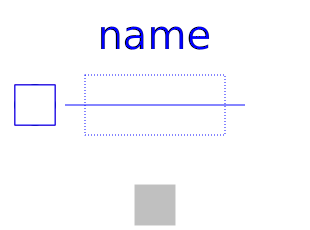
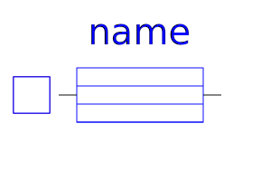

.
Modelica
.
Electrical
.
Machines
.
Losses
.
DCMachines
Information
This package contains loss models used for DC machine models.
Contents
Name
Description
Brush
Model considering voltage drop of carbon brushes
brushVoltageDrop
Voltage drop of carbon brushes

StrayLoad
Model of stray load losses dependent on current and speed

Core
Model of core losses
Revisions
Main Authors:
Anton Haumer
Technical Consulting & Electrical Engineering
D-93049 Regensburg
Germany
email:
a.haumer@haumer.at
v2.4.0 2010/04/20 Anton Haumer
first implementation
Generated at 2020-06-05T21:39:08Z by
OpenModelica 1.16.0~dev-442-g2e5bc9f